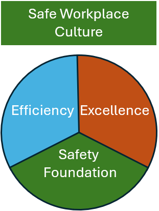

Consulting Services

Lean Six Sigma
Lean is the elimination of non-value-added activity and reduce DOWNTIME: Defects, Overproduction, Waiting, Non-utilised talent, Transportation, Inventory, Motion & Extra processing. Six Sigma is a process that eliminates variation in processes to build stability and capability, then moves output closer to the desired target.

Operational Excellence
Operational Excellence in manufacturing is the key philosophy for permanent continuous improvement of processes, culture, and delivery of key performance Indicators (KPIs). KPIs are typically Overall Equipment Effectiveness (OEE), On Time In Full (OTIF), and Cost Of Poor Quality (COPQ).

Safe Workplace Culture
Beyond Compliance: moving past a simple manual of rules or checklists.
Behavioural Safety: Workers feel safe to report hazards, admit mistakes, ask questions, or pause work without fear.
Visible Leadership Commitment: Leaders and managers model safe habits.
Active Employee Engagement: Staff at all levels look out for one another.
Blame-Free Learning: Incidents and near-misses are analysed to fix underlying system flaws rather than to assign individual blame.